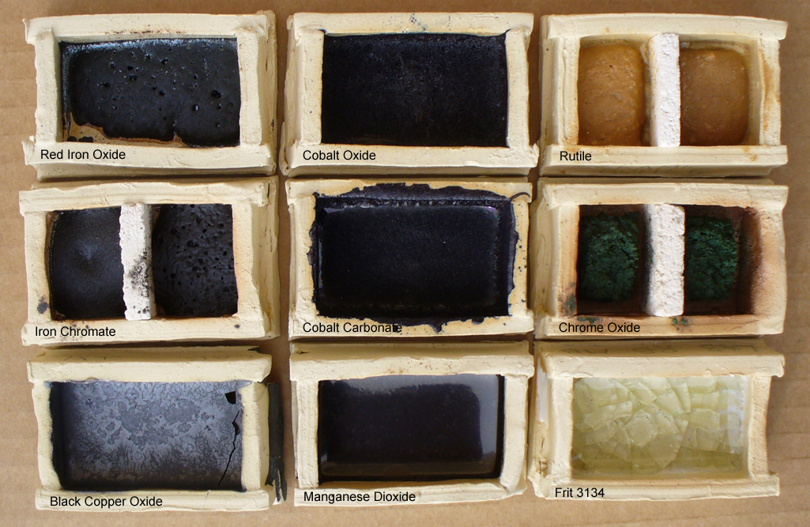
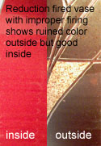
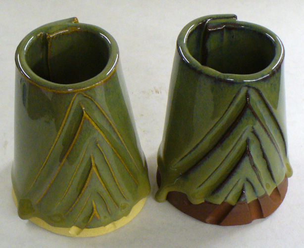
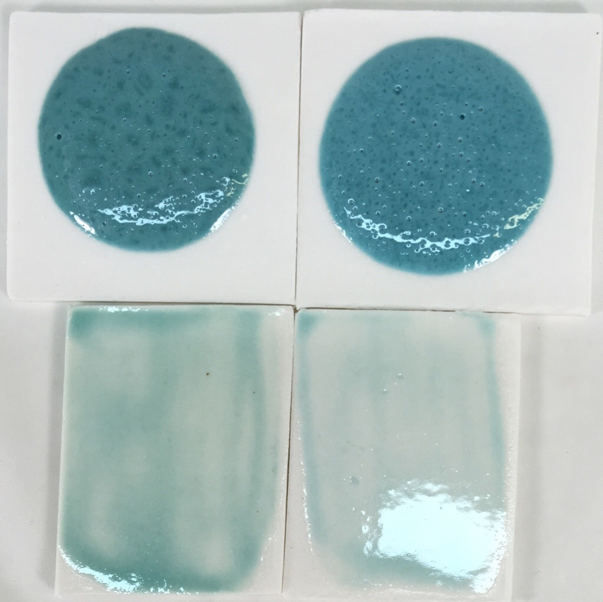
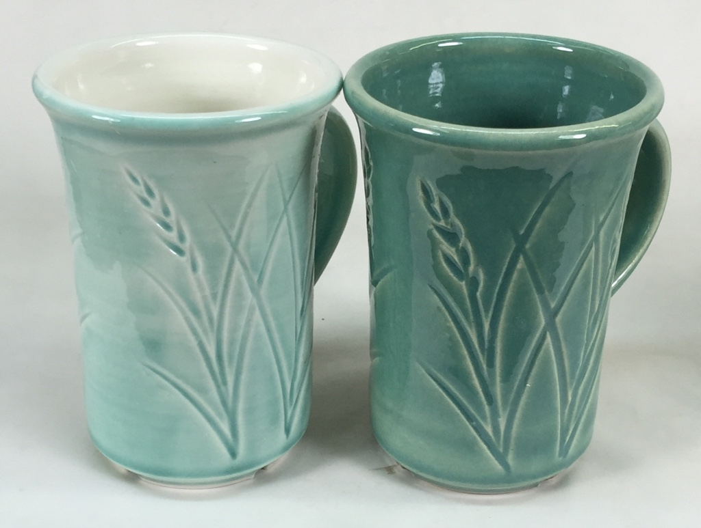
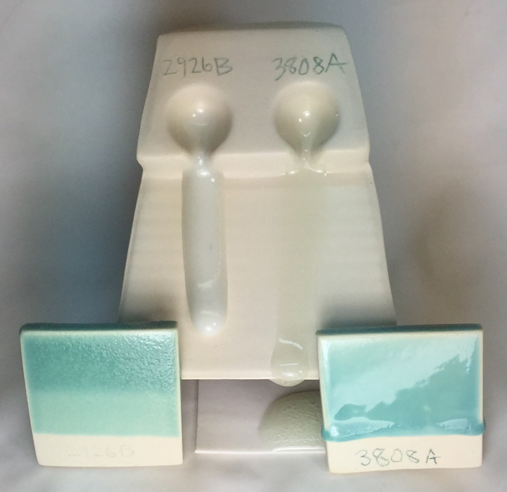
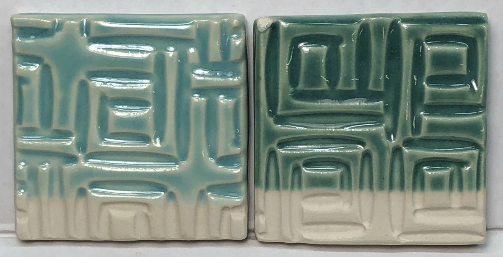

Copper Oxide Black
Alternate Names: Copper (II) Oxide, Black Copper Oxide, BCO, Cupric Oxide
| Oxide | Analysis | Formula | Tolerance |
|---|---|---|---|
| CuO | 100.00% | 1.00 | |
| Oxide Weight | 79.54 | ||
| Formula Weight | 79.54 | ||
Notes
One of the oldest colorants used by potters. It is a popular source of CuO in glazes and glass. In sufficient percentages it can be a very strong flux, in a mix of 50% Ferro borax frit 3134 it will dissolve a firebrick crucible at cone 6! It is the most stable form of oxidized copper (Cuprous oxide oxidizes to cupric oxide in normal firings).
The oxide form of copper can give a speckled color in glazes whereas the carbonate form will give a more uniform effect.
Copper normally produces green colors in amounts to 5% where it moves toward black. In reduction firing, it turns to Cu2O and gives vibrant red hues. It the glaze is fluid copper will tend to crystallize heavily. See CuO and Cu2O in the oxides database for more information.
Above 1025C copper becomes increasingly volatile and its crystalline structure breaks down. At 1325C CuO melts. This can affect the color of other glazes pieces in the kiln. Glazes containing copper can change significantly because of loss of copper. Some potters alternate between reduction and oxidation, and even put a dish filled with copper carbonate in the center of the kiln to minimize this phenomenon.
There are many workable copper ores (i.e. tenorite, cuprite). Source: American Chemet Corp., 708-948-0800 FAX 708-948-0811
See also: "Coloring Mechanism of Peach Bloom Copper Red Glazes" written by four technicians from China published in Dec 91 Bulletin of the American Ceramic Society.
Related Information
How do metal oxides compare in their degrees of melting?

This picture has its own page with more detail, click here to see it.
These metal oxides have been mixed with 50% Ferro frit 3134 and fired to cone 6 oxidation. Chrome and rutile have not melted, copper and cobalt are extremely active melters, frothing and boiling. Cobalt and copper have crystallized during cooling. Manganese has formed an iridescent glass.
Copper can produce bright red glazes in correct reduction firing

This picture has its own page with more detail, click here to see it.
Copper red reduction glaze at cone 9 reduction
This picture has its own page with more detail, click here to see it.
The color red is difficult to achieve in ceramics. In reduction firing copper can turn many dazzling shades of red.
Copper oxide (2%) in an otherwise stable cone 6 oxidation glaze fluxes it

This picture has its own page with more detail, click here to see it.
Switching copper carbonate for copper oxide in a fluid glaze

This picture has its own page with more detail, click here to see it.
The top samples are 10 gram GBMF test balls melted down onto porcelain tiles at cone 6 (this is a high melt fluidity glaze). These balls demonstrate melt mobility and susceptibility to bubbling but also color (notice how washed out the color is for thin layers on the bottom two tiles). Both have the same chemistry but recipe 2 has been altered to improve slurry properties.
Left: Original recipe with high feldspar, low clay (poor suspending) using 1.75% copper carbonate.
Right: New recipe with low feldspar, higher clay (good suspending) using 1% copper oxide.
The copper oxide recipe is not bubbling any less even though copper oxide does not gas. The bubbles must be coming from the kaolin.
Why is this cone 6 glaze so different on these two different porcelains?

This picture has its own page with more detail, click here to see it.
Why the difference? The one on the right (Plainsman M370) is made from commodity American kaolins, ball clays, feldspars and bentonite. It looks pretty white-firing until you put it beside the Polar Ice on the left (made from NZ kaolin, VeeGum plasticizer and Nepheline Syenite as the flux). These are extremely low iron content materials. M370 contains low iron compared to a stoneware (less than 0.5%) that iron interacts with this glaze to really bring out the color (although it is a little thicker application that comes nowhere near explaining this huge difference). Many glazes do not look good on super-white porcelains for this reason.
Copper oxide needs a fluid-melt transparent to produce a glossy glaze

This picture has its own page with more detail, click here to see it.
Fired at cone 6. A melt fluidity comparison (behind) shows the G3808A clear base is much more fluid. While G2926B is a very good crystal clear transparent by itself (and with some colorants), with 2% added copper oxide it is unable to heal all the surface defects (caused by the escaping gases as the copper decomposes). The G3808A, by itself, is too fluid (to the point it will run down off the ware onto the shelf during firing). But that fluidity is needed to develop the copper blue effect (actually, this one is a little more fluid that it needs to be). Because copper blue and green glazes need fluid bases, strategies are needed to avoid them running off the ware. That normally involves thinner application, use on more horizontal surfaces or away from the lower parts of verticals.
G3806D cone 6 glaze with copper carbonate, copper oxide

This picture has its own page with more detail, click here to see it.
This G3806D fluid melt glaze recipe demonstates the different color characteristics imparted by copper carbonate (left) and copper oxide (at 2%). The carbonate version is bluer and less intense. Copper carbonate is about 65% CuO while the oxide version is 100%. Our supply of the oxide version is not producing any specking (if yours does you may need to sieve or blender mix the slurry).
Links
| Articles |
Leaching Cone 6 Glaze Case Study
An example of how we can use INSIGHT software to determine of a glaze is likely to leach |
| Materials |
Copper Carbonate
A source of CuO copper oxide used in ceramic glazes to produce a variety of colors (used only or with other colorants). |
| Materials |
Copper Oxide Red
|
| Materials |
Copper Carbonate Basic
This form of copper carbonate is the article of commerce, a mixture of theoretical copper carbonate and copper hydroxide. |
| Hazards |
Copper Oxide and Carbonate
|
| Hazards |
Copper Compounds Toxicology
|
| Typecodes |
Generic Material
Generic materials are those with no brand name. Normally they are theoretical, the chemistry portrays what a specimen would be if it had no contamination. Generic materials are helpful in educational situations where students need to study material theory (later they graduate to dealing with real world materials). They are also helpful where the chemistry of an actual material is not known. Often the accuracy of calculations is sufficient using generic materials. |
| Typecodes |
Colorant
Metallic based materials that impart fired color to glazes and bodies. |
| Oxides | CuO - Cupric Oxide |
| Temperatures | Copper oxide melts (1325-) |
| Temperatures | Copper Oxide breakdown (1025-1325) |
| Glossary |
Metal Oxides
Metal oxide powders are used in ceramics to produce color. But a life time is not enough to study the complexities of their use and potential in glazes, engobes, bodies and enamels. |
Data
| Frit Softening Point | ~1400C M |
|---|---|
| Density (Specific Gravity) | 6.45 |
 PayPal | No tracking, No ads, No paywall, No transient content! Just organized, concise information constantly updated and improved. Was this helpful? Consider supporting me. |
| By Tony Hansen Follow me on        |  |
Got a Question?
Buy me a coffee and we can talk 

https://digitalfire.com, All Rights Reserved
Privacy Policy